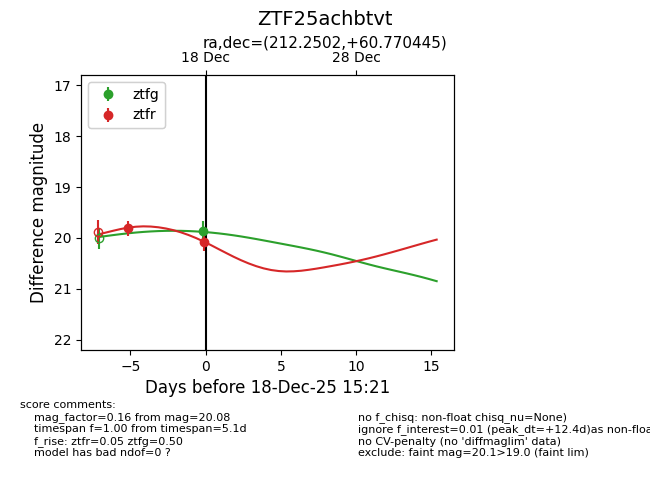
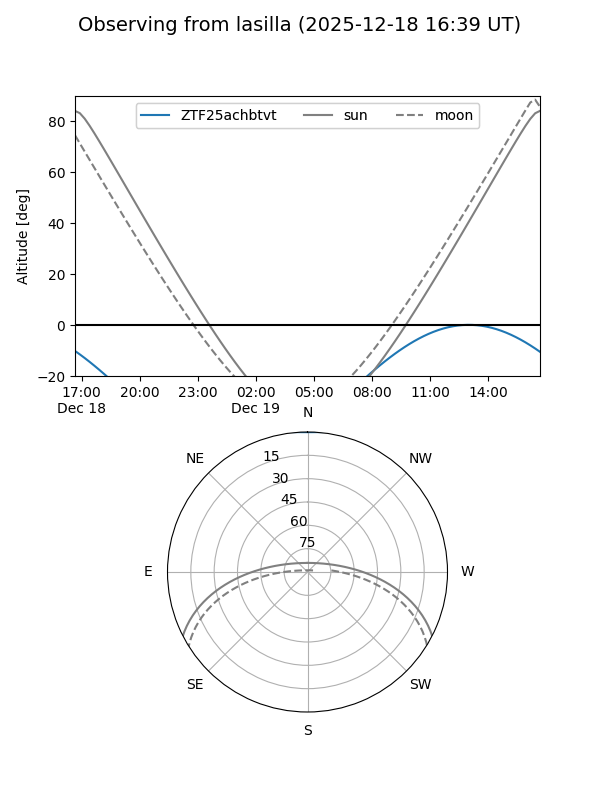
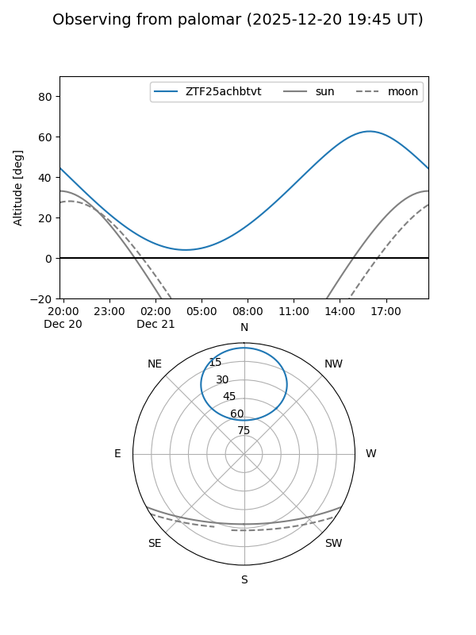
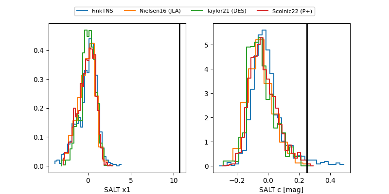

ZTF25achbtvt
Target ZTF25achbtvt at 2025-12-18 13:57
Aliases and brokers:
FINK: fink-portal.org/ZTF25achbtvt
Lasair: lasair-ztf.lsst.ac.uk/objects/ZTF25achbtvt
ALeRCE: alerce.online/object/ZTF25achbtvt
alt names
ZTF25achbtvt (ztf,fink_ztf)
Coordinates:
equatorial (ra, dec) = 212.2502,+60.77045
equatorial (HMS+DMS) = 14:09:00.04,+60:46:13.60
galactic (l, b) = (106.9653,+53.88757)
Photometry
last ztfg=19.86, ztfr=19.81
1 ztfg, 1 ztfr detections
Lightcurve

Visibility


Additional plots
